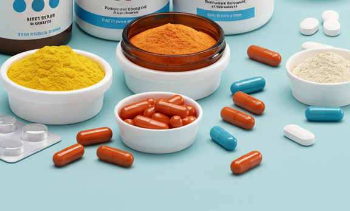
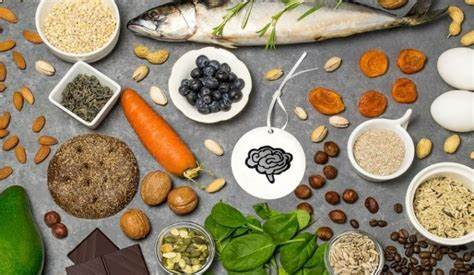
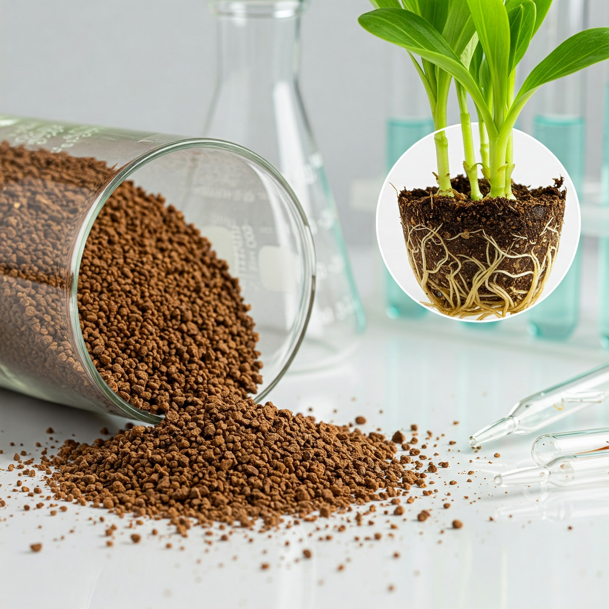
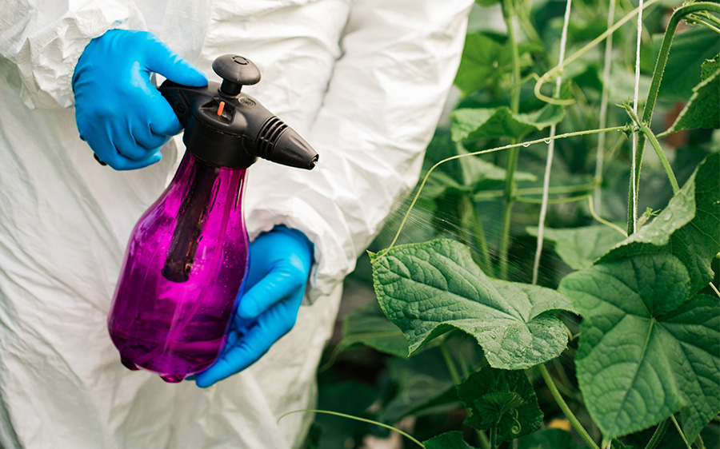
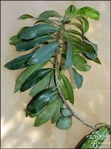

Plants, animals, and microbes such as fungi harbor vast undiscovered bioactive compounds with transformative potential. A prime example is artemisinin, a malaria treatment derived from Artemisia annua, which has saved millions of lives globally. Meanwhile, modern agriculture’s overreliance on broad-spectrum agrochemicals poses severe environmental risks underscoring the urgent need for targeted, sustainable bio-innovations. To address these challenges, our team leverages cutting-edge bio- and computational techniques, including machine learning, to systematically mine Africa’s biodiversity for novel, eco-friendly solutions bridging traditional knowledge with next-generation discovery.
Research Fields

Drug Discovery

Nutraceutical development

Biofortification

Biofertilizer development

Biopesticide discovery
